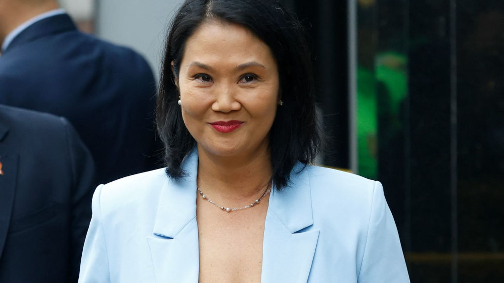
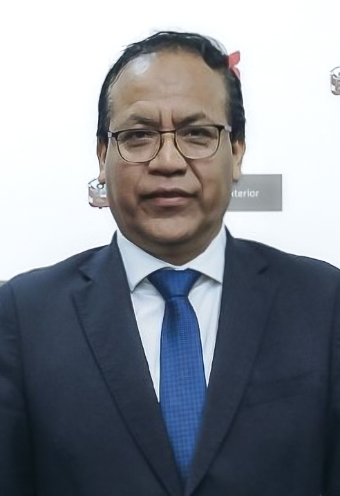
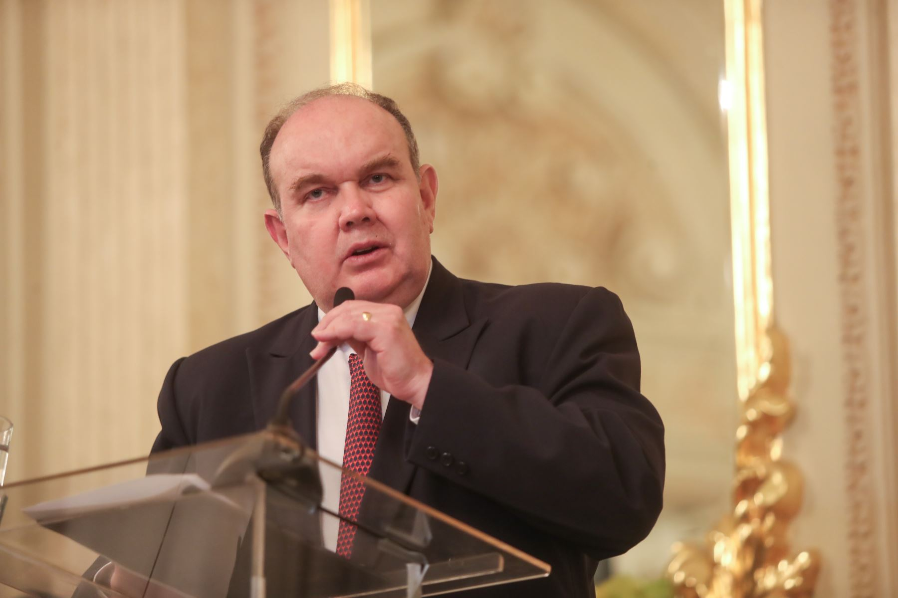

Keiko Sofía Fujimori Higuchi

Situación Política Actual (Abril 2026)
Elecciones 2026: Keiko Fujimori lidera el conteo de votos de la primera vuelta con aproximadamente el 16.89% de los votos válidos (al 59.70% del escrutinio de la ONPE). Disputará la presidencia en el balotaje de junio contra Rafael López Aliaga de Renovación Popular.
Representación en el Congreso: Su partido, Fuerza Popular, se perfila como la fuerza con mayor representación en el nuevo Parlamento bicameral, con proyecciones de liderar el Senado con más de 20 escaños.
Candidaturas: Esta es su cuarta postulación presidencial consecutiva (2011, 2016, 2021 y 2026), habiendo llegado a la segunda vuelta en todas las ocasiones anteriores.
Datos personales: Nacida en Lima en 1975, es hija del fallecido expresidente Alberto Fujimori. Se encuentra divorciada de Mark Vito, con quien tiene dos hijas, Kyara y Kaori.
Roberto Sanchéz Palomino

Situación Electoral Actual (Abril 2026)
Segunda Vuelta: Sánchez ha desplazado a Rafael López Aliaga del segundo lugar en el conteo oficial, consolidándose con aproximadamente el 12.1% de los votos.
Disputa: Al cierre de los últimos reportes del 90.1% de actas, mantiene una ventaja estrecha (superior a los 4,000 votos en algunos cortes regionales) sobre López Aliaga para definir quién enfrentará a Keiko Fujimori en junio.
Experiencia Ministerial: Fue Ministro de Comercio Exterior y Turismo durante el gobierno de Pedro Castillo (2021-2022).
Propuestas: Su plataforma electoral se ha centrado en el ingreso libre a la educación superior, el fortalecimiento de derechos laborales y la imprescriptibilidad de los delitos de corrupción.
Rafael López Aliaga

Situación Electoral Actual (15 de abril de 2026)
Desplazamiento al Tercer Lugar: Según el reporte de la ONPE al 89.8% de actas contabilizadas, López Aliaga ha descendido al tercer lugar, siendo superado por Roberto Sánchez de Juntos por el Perú.
Denuncias de Fraude: Ante la pérdida de su posición para pasar a la segunda vuelta, López Aliaga ha denunciado un presunto "fraude electoral" y ha exigido la nulidad del proceso.
Movilizaciones: Ha convocado a sus simpatizantes a concentraciones frente al Jurado Nacional de Elecciones (JNE) y la sede de la ONPE para protestar contra los resultados oficiales.
Trayectoria y Perfil
Exalcalde de Lima: Ejerció como alcalde metropolitano de Lima entre 2023 y 2025, cargo que dejó para postular a la presidencia.
Renovación Popular: Es el fundador y principal referente de este partido, de tendencia conservadora y derecha política, sucesor de Solidaridad Nacional.